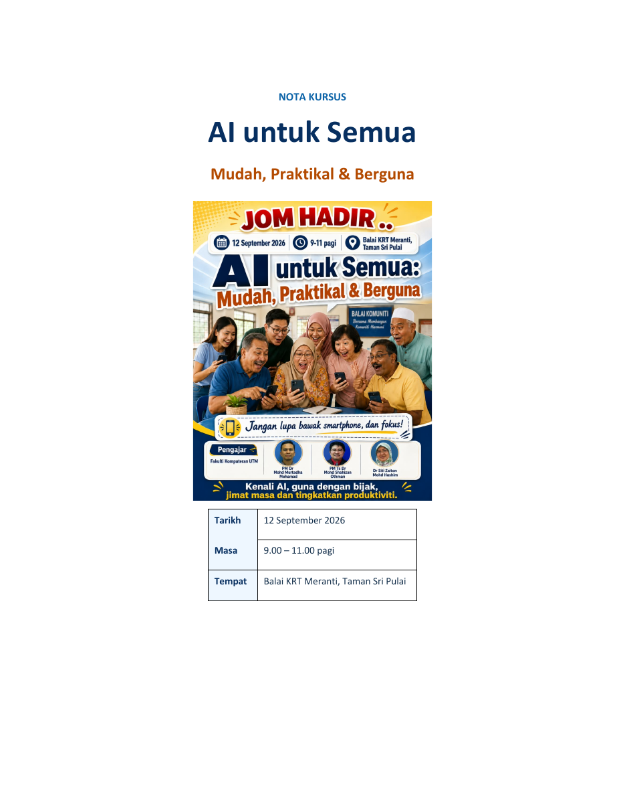

Asas AI
Kenali AI Generatif, kegunaan, had dan peranan manusia.
Bahan rujukan peserta
Nota 19 halaman yang boleh dibaca pada telefon, dimuat turun atau dicetak untuk rujukan selepas kursus.

Kandungan nota
Kenali AI Generatif, kegunaan, had dan peranan manusia.
Cara membuka alat AI, bercakap, menyalin prompt dan menyimpan hasil.
Formula Siapa + Apa + Cara serta contoh arahan susulan.
Komunikasi, kehidupan harian dan penyuntingan imej AI.
Privasi, pengesanan scam dan semakan maklumat melalui sumber rasmi.
Prompt sedia guna dan cabaran untuk diteruskan selepas kursus.
Pratonton
Pelayar telefon tertentu tidak memaparkan PDF di dalam halaman.
Buka Nota PDF